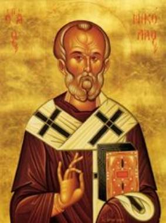

The Legend of the Barbarian and the St. Nicholas Icon
Barbarus, a pagan, has acquired an icon of St.
Nicholas and, hearing of the Saint’s power, places all his possessions under
its protection while he is gone. Standing at the shrine, he says:
“Nicholas, all that I possess, I have put in this chest. I leave it to you in charge; keep what is here. I pray you, listen to my request. See to it that no thief gets in. I am putting in your charge gold and precious raiment.”
Barbarus expresses the sense of security that he feels,
now that his valuables are in the charge of the icon of St. Nicholas. At the
same time, he warns the icon that there’ll be trouble if anything happens to
his property.
After Barbarus has left, thieves – noticing the
house open and unguarded – carry off everything. When Barbarus returns, he
finds his treasure gone. He turns to the icon and blames it for his loss,
threatening it in the process: “If you don’t give me back my things, I’ll make
you pay for it!”
Barbarus then takes a whip and vents his feelings
toward it.
In order to set things right, St. Nicholas appears to the thieves, showing all the signs that he has been whipped personally. He tells the thieves that he’s been whipped because he can’t restore the things left in his charge, and threatens:
“If you don’t do this, you’ll be hanged tomorrow on a gibbet, for your misdeeds and thievery, I’ll proclaim abroad.”
The threats have the desired effect on the thieves,
who fearfully return the goods.
When Barbarus finds his treasures again, he expresses
his joy and surprise:
“What a good watch I’ve had! It returns everything. I’m quite surprised.”
Then Barbarus approaches the icon and expresses his
gratitude.
At this point St. Nicholas makes his appearance in person. He disclaims any credit to himself, and bids Barbarus to praise God alone, through Whom his things have been restored. Barbarus, in reply, renounces his heathen beliefs and praises God, the maker of Heaven and Earth and sea, Who has forgiven his sin.
The Barbarian
and the St. Nicholas Icon has been ascribed to Hilarius, a wandering scholar, whose works
comprise a number of poems and three plays. His drama must have held particular
appeal for the common people, since it combined the language of the locals,
French, with the language of the Church, Latin.
A rather amusing translation of this bilingual play
can be found with Professor Gayley (Plays
of Our Forefathers, and Some of the Traditions upon Which They Were Founded),
and as it seems to capture the mischievous spirit of the medieval choirboys,
who most likely also performed it.
The dramatis
personae in the play are: Barbarus, owner of the treasure, corresponding to
the Jew in version of the story found in The
Golden Legend; four or six robbers; and St. Nicholas.
The printed text of the little play is simple
enough. The easy swing of the series of Latin songs and the French refrains
offer opportunities for choral participation. The beating of the image and the
impromptu comedy business – which
choir boys might be counted on to supply – provide as much entertainment at a
church festival today as they doubtless did in the twelfth-century celebration
on the eve of the Feast of St. Nicholas.
By far the most elaborate and the best-known
treatment of the legend is the Jeu de St
Nicolas of Jean Bodel. Here Barbarus has become a pagan king and the
setting is the Crusades. To be sure, the tavern scenes are more suggestive of
the everyday life of Arras than they are in keeping with the miraculous
intervention of the Saint, but the theme of the Iconia remains essentially the same.
In Wace’s version in his Life of St. Nicholas, pagans come from over the sea to rob the
Christians. One of the victorious pagans finds an image and learns from a
captive Christian that it is an image of St. Nicholas and will protect his
wealth. Thieves, however, steal the pagan’s wealth. The pagan strikes the image
of the Saint. At the command of St. Nicholas the stolen wealth is returned. The
pagan and all his country are convicted by the Holy Spirit and give their lives
to Christ!
This legend is first found in a Greek version,
published by Anrich as Thauma de Imagine
in Africa, and probably written in Calabria about the year 1000. The
historical basis of the legend lies in the invasion of Calabria by Muslims from
Africa between 871 and 923. The account first appears in Latin in the additions
to the Vita by Johannes Diaconus, as
published in Mombritius and Falconius. It is also found in the versions of
Reginold and Otloh, and in the Austrian Legendary.
The Greek text tells how, while the Vandals were pillaging Calabria, one of the invaders, a tax collector, found a beautiful icon and carried it off. Upon learning from one of the prisoners that it was an image of the wonderworking St. Nicholas, he took it home and set it on guard over all his possessions. The rest of the story, the theft of all his goods, his threats to the image, the appearance of St. Nicholas to the robbers to compel them to make amends, and the joy and conversion of the Vandal, is minutely followed in the text of the Fleury play.
Thought to Ponder:
Thought to Discuss around the Dinner Table:
Did You Know? “The role of a Saint in the social life of
the Middle Ages was important,” says Petit de Julleville (Les Mystères, Vol. I, p. 11), “he was a protector and his relics,
or even statues or pictures of him assured this protection; to gain it was not
only protection from heaven, but also earthly prosperity.”
The Legend of the Barbarian and the St. Nicholas Icon
